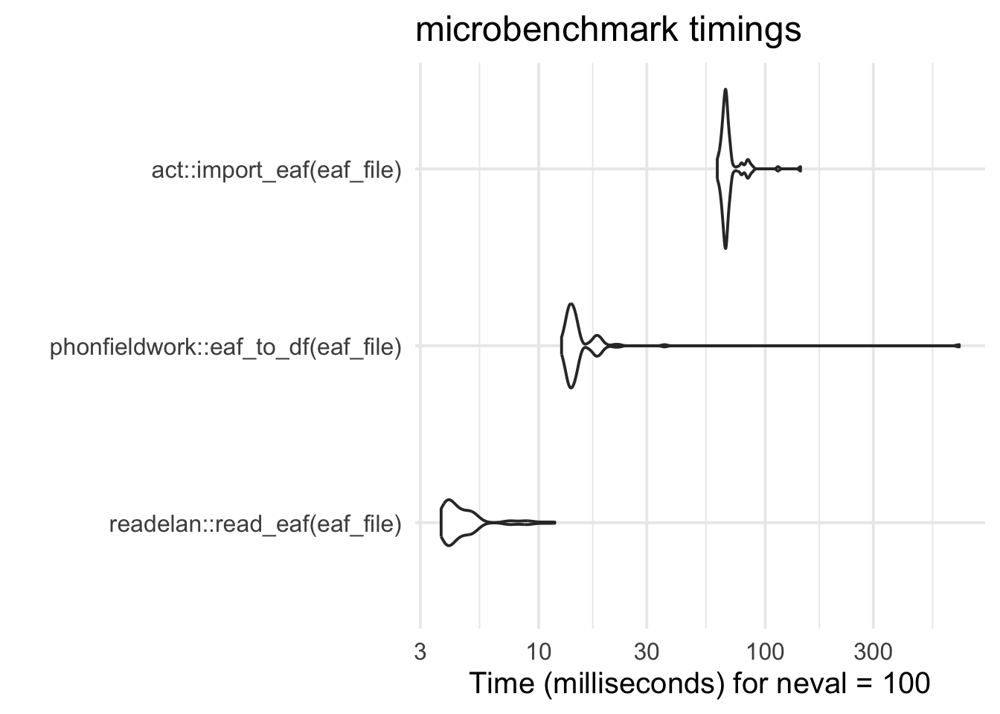

eaf_file <- system.file("extdata",
"example.eaf",
package = "readelan")
bench_test <-
microbenchmark::microbenchmark(
readelan::read_eaf(eaf_file),
phonfieldwork::eaf_to_df(eaf_file),
act::import_eaf(eaf_file),
times = 100
)FAQ
What is {readelan}?
{readelan} is an R package with the explicit goal to facilitate reading ELAN files into R for further analysis.
The {readelan} package is a fast yet lightweight package with only one dependency outside of core packages, namely {xml2}. The {xml2} package is central to access the inner structure of ELAN files, which are all fundamentally XML files.
Why was {readelan} needed?
In my experience, many researchers in linguistics and related field (e.g., psychology, cognitive science, anthropology, etc.) use the ELAN annotation software regularly, and simultaneously use the R programming language for analysis. Despite this, there was no dedicated package on CRAN for reading ELAN files.
At least a couple of other packages on CRAN have functions to read ELAN annotation files (.eaf) into R, but these packages are not targeting all the different files associated with ELAN, and they are also part of larger packages with a much broader scope – e.g., {act} and {phonfieldwork}. Benchmarking against these other packages indicate that {readelan} is fast option:

Can I read multiple files?
Yes! All read_ functions in {readelan} accept either a single file or a vector of files as input (see also Reading multiple files).
Can I read files online?
Yes! Since the functions rely on the {xml2} package, which can read files directly from an online location (as long as it is structured as an XML file), you can simply point the read_ functions in {readelan} to the URL of the file itself and it should read it, assuming you have an internet connection.
What is the function output?
The read_ functions of {readelan} output base R data frames. If you read multiple files, the individual data frames (from each input file) are already combined together into a single data frame in the output.
If you prefer to work with {tidyverse}-style tibbles, you will need to convert the output:
read_eaf("path/to/elan_file.eaf") |>
tibble::as_tibble()Can I select which tiers to read?
Yes! In read_eaf(), you can use the arguments tiers (or xpath if more advanced) to specify specific tiers by names or types to read. This speeds up the process of reading the data, since only some tiers need to be read.
For instance, if I know that I only want to read the tiers “Lexem_Gebärde_l_A” and “Lexem_Gebärde_r_A” in this file from the DGS-Korpus, I can specify this and read the file much faster.
dgs_file <- "https://www.sign-lang.uni-hamburg.de/meinedgs/eaf/1413451-11105600-11163240.eaf"
microbenchmark::microbenchmark(
readelan::read_eaf(dgs_file),
readelan::read_eaf(dgs_file,
tiers = list(tier = c("Lexem_Gebärde_l_A", "Lexem_Gebärde_r_A"))),
times = 1
)Unit: milliseconds
expr
readelan::read_eaf(dgs_file)
readelan::read_eaf(dgs_file, tiers = list(tier = c("Lexem_Gebärde_l_A", "Lexem_Gebärde_r_A")))
min lq mean median uq max neval
673.8867 673.8867 673.8867 673.8867 673.8867 673.8867 1
502.7346 502.7346 502.7346 502.7346 502.7346 502.7346 1Can I write files back into ELAN?
No. The goal of {readelan} is to allow for the reading of ELAN data into R, not the other way around. ELAN has great options for importing data from character-separated values (e.g., .csv) files and other file formats. However, if you do require the possibility to write data back into ELAN files, you should look at the {phonfieldwork} package.
Where does the logo come from?
A lot of R packages use a so-called hex sticker logos as a type of branding. This logo, like many others, was created using the {hexSticker} package. The idea was to display the words read and ELAN in the ELAN-style red color, arranged among the recognizable shape of stacked, sequential annotation cells. The typeface (“font”) is called MuseoModerno.
Should I cite {readelan}?
My personal opinion is to cite software for two reasons: to credit the work (especially if it is open source and/or voluntary-based) and for reproducibility. You can cite {readelan} by using the citation("readelan") function in R (see also Citation).
Remember to also cite ELAN itself, when using it for research!
I found a bug
Oh no! Please report it by filing an issue on GitHub. You may also try to contact the maintainer via email to report a bug or ask for assistance, but I may not be able to respond to such requests quickly.